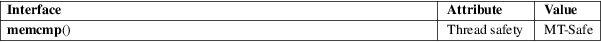

memcmp − compare memory areas
Standard C library (libc, −lc)
#include <string.h>
int memcmp(const void s1[.n], const void s2[.n], size_t n);
The memcmp() function compares the first n bytes (each interpreted as unsigned char) of the memory areas s1 and s2.
The memcmp() function returns an integer less than, equal to, or greater than zero if the first n bytes of s1 is found, respectively, to be less than, to match, or be greater than the first n bytes of s2.
For a nonzero return value, the sign is determined by the sign of the difference between the first pair of bytes (interpreted as unsigned char) that differ in s1 and s2.
If n is zero, the return value is zero.
For an explanation of the terms used in this section, see attributes(7).

C11, POSIX.1-2008.
POSIX.1-2001, C89, SVr4, 4.3BSD.
Do not use memcmp() to compare security critical data, such as cryptographic secrets, because the required CPU time depends on the number of equal bytes. Instead, a function that performs comparisons in constant time is required. Some operating systems provide such a function (e.g., NetBSD’s consttime_memequal()), but no such function is specified in POSIX. On Linux, you may need to implement such a function yourself.
bstring(3), strcasecmp(3), strcmp(3), strcoll(3), strncasecmp(3), strncmp(3), wmemcmp(3)